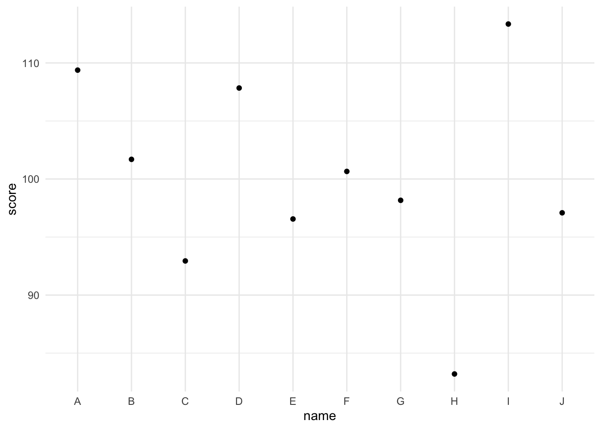
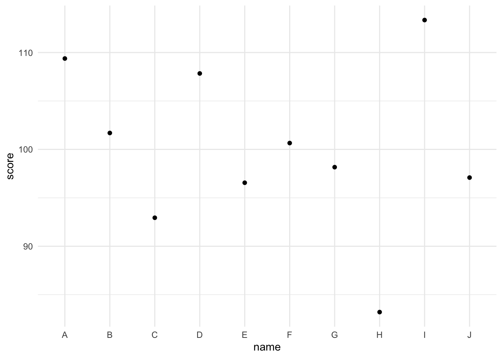

library(ggplot2)
df <- data.frame(
id = 1:10,
name = LETTERS[1:10],
score = rnorm(10, mean = 100, sd = 10)
)
ggplot(df, aes(x = name, y = score)) +
geom_point() +
theme_minimal()
Coding club is meant to build coding skills in R, with some additional skills in git, github, HTML, CSS, and/or JavaScript. You don’t need to have any experience apart from basic R.
We’re still thinking of ideas for this coding club. It might be in person in Glasgow or online. We might cover package development again, shiny apps, or data dashboards. Check back here in late August.
Wednesdays from 16:05 to 17:00 UK time from October 5 to December 7.
Our next set of sessions will be making your own R package. Making an R package develops generic coding skills and gives you valuable insight to how R works. We’ll cover setting up a package project, creating functions, documenting them with roxygen, creating vignettes, unit testing, package testing, version control with git, and distribution with github.
Book/Code – this will update regularly before sessions to show what we intend to cover, and after sessions to document what we did actually cover.
You will need only very basic R skills and a willingness to learn. The only people this would not be suitable for are those with zero previous experience in R (unless you know you pick up coding languages quickly). If you can install packages and understand the following code, you should be fine:
library(ggplot2)
df <- data.frame(
id = 1:10,
name = LETTERS[1:10],
score = rnorm(10, mean = 100, sd = 10)
)
ggplot(df, aes(x = name, y = score)) +
geom_point() +
theme_minimal()
The schedule below is only indicative. Coding club is much less formal than a class, so the tasks might move around depending on the skill and interests of the attendees.
(2022-10-05)
Create a package project and edit the default files. We’ll start using the most helpful package, usethis.
(2022-10-12)
Add datasets to your package and document them with a codebook. You can use our demo data or your own.
(2022-10-19)
Learn to write custom functions and include them in your package.
(2022-10-26)
Write function documentation using the roxygen format. This is what creates the help documentation for functions.
(2022-11-02)
Include your study analysis code as a package vignette.
(2022-11-09)
Create a package website using pkgdown.
(2022-11-16)
Write unit tests for your custom functions using testthat.
(2022-11-22)
How to run CMD-check to make sure everything is put together right, and how to troubleshoot the inevitable problems.
(2022-11-30)
Set up a github account and make a package repository to share your package and pkgdown website.
(2022-12-07)
Whatever we didn’t get to. We’ll also discuss how to continue your learning.
In autumn 2021, we’ll be making a custom web app for searching, visualising and updating a list of anything you’re interested in. The focus will be learning by doing, but the sessions will be supported by material from Building Web Apps with R Shiny.
2021-10-06 14:00 (Europe/London)
Before the session:
In this first session, we:
Resources:
2021-10-20 14:00 (Europe/London)
Before the session:
In this second session, we:
Resources:
2021-11-03 14:00 (Europe/London)
In this third session, we:
You can work on your own to add filtering for language and/or page length. Remember that all the columns are character columns and you need to deal with the page number entry that contains non-numeric characters.
Resources:
2021-11-10 14:00 (Europe/London)
In this fourth session, we:
Resources:
2021-11-24 14:00 (Europe/London)
In this fifth session, we will:
Resources:
2021-12-08 14:00 (Europe/London)
In this seventh session, we will:
2021-12-15 14:00 (Europe/London)
In this last session, we will:
2021-05-12 14:00 (Europe/London)
In this first session, we:
runif())To prep for the next meeting, I’d like you to:
Resources:
2021-05-26 14:00 (Europe/London)
In this second session, we added the normal distribution tab, used a fluidRow to put the plot next to the input, and learned how to check the user input for errors, such as impossible values, and handle these without crashing.
To prep for the next meeting, I’d like you to:
Resources:
2021-06-09 14:00 (Europe/London) Zoom link
In this third session, we restructured the simulation functions to keep a record of previously simulated data to make faceted plots for comparison. We learned a lot about debugging.
The video ends with an unresolved bug. The resolution is to make sure that input$unif_submit is definitely an integer when you add it to the data table. I really don’t know why this fixes it. So the relevant code in the observeEvent() function for unif_submit should be:
To do:
Resources:
2021-03-17 14:00 (Europe/London)
In this first session, we:
To prep for the next meeting, I’d like you to:
The password for the session recording is on the coding club channel of the Methods and MetaScience Team. Contact Lisa to be added if you’re at Glasgow, or to ask for the password if you’re not.
You can download a zip file with the code for our current progress.
2021-03-31 14:00 (Europe/London)
In this second session, we:
observeEvent() to change the style of buttons when clicking on themTo prep for the next meeting, I’d just like you to:
selectInput(), radioButtons(), textInput(), or sliderInput().Resources:
2021-04-14 14:00 (Europe/London)
In this third session, we:
Q() to close the current question box and open the next oneobserveEvent() to respond to clicking the submit buttonreactiveValues() to create values for saving the image button answers and plotoutputPlot() and renderPlot() that creates a plot from the quiz answersTo prep for the next meeting, I’d like you to:
textOutput() and renderText()Resources:
2021-04-28 14:00 (Europe/London)
In this fourth session, we:
Resources: